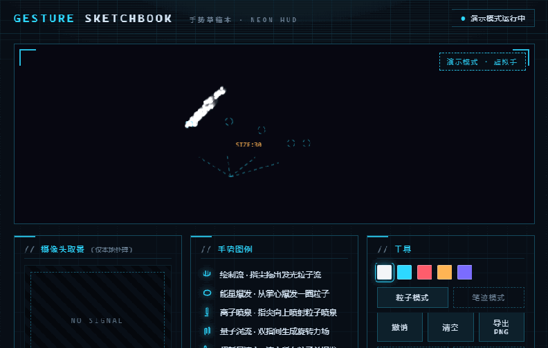
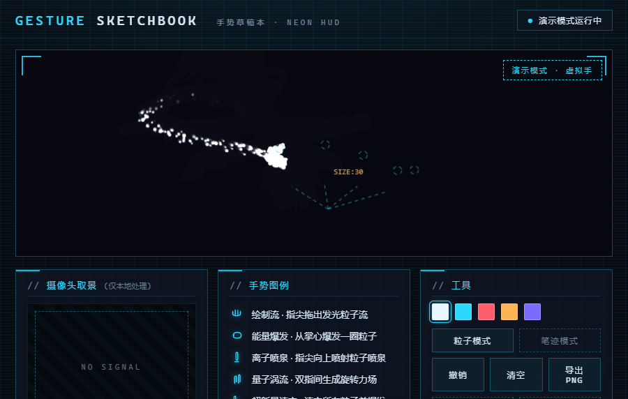

从"没写过一行代码"到"GitHub 上有自己署名的手势交互作品"。全程 6 个阶段，每一小步都附命令和"你应该看到什么"。

vibecoding 的核心不是"背语法"，而是一个循环：描述 → 生成 → 验证 → 修改。你负责描述想要什么、判断结果对不对；AI 负责写代码。这门课的全部内容，就是带你把这个循环完整跑通一遍。
整个项目的数据流只有三段。记住这张图，后面所有代码都能对上号：
对应到文件：gestures.js 管前两段，sketch.js 和 app.js 管最后一段。所有"可以随便改"的参数，都集中在 config.js 一个文件里。
只需要 3 样东西，全部免费：
| 工具 | 用途 | 下载地址 | 验证命令 |
|---|---|---|---|
| Node.js | 跑本地服务器、跑测试 | nodejs.org（选 LTS） | node -v |
| VS Code | 看代码、改代码 | code.visualstudio.com | 能打开就行 |
| Git | 保存版本、上传 GitHub | git-scm.com | git --version |
装完后打开命令行（Windows 按 Win+R 输入 cmd 回车），逐条输入验证命令，看到版本号（如 v22.22.0）就是成功。
再注册一个 GitHub 账号（github.com/signup）。想用命令行上传的话，装 GitHub CLI 后执行：
gh auth logingit clone https://github.com/mayuhan78855/gesture-sketchbook.git
cd gesture-sketchbook
node scripts/serve.js浏览器打开 http://localhost:8000：

每个文件只干一件事——这是好项目的通例，也是你能快速上手的理由：
| 文件 | 你要理解的一件事 |
|---|---|
js/config.js | 所有"可调参数"集中在这：颜色、笔刷、平滑、阈值、粒子数量。改这里 = 改行为 |
js/effects.js | 手势→粒子效果注册表：一个条目 = 一种手势的效果，加新效果就加条目 |
js/particles.js | 粒子池、力场（引力/涡流/掌风）与辉光拖影渲染 |
js/app.js | 模式切换；笔迹模式动作在 onGesture()，粒子模式在 particleFrame() 走注册表 |
js/gestures.js | recognizeForVideo() 每帧调一次，吐出 21 个关键点 + 手势名 |
js/sketch.js | 笔迹模式：begin() / addPoint() / end()——一笔的生命周期 |
推荐阅读顺序：config.js → effects.js（注册表）→ app.js 的 particleFrame → particles.js 的 update → gestures.js 的 _handle。
两个值得停下来想 1 分钟的细节：
防抖——stableFrames: 3 表示"连续 3 帧识别到同一手势才生效"。没有它，手势会在握拳/张开之间闪烁，颜色会连跳好几次。
平滑——smoothing: 0.55 是指数平滑，让笔迹跟手又不抖成筛糠。这两个参数就是手势交互"手感"的全部秘密。
以后做任何项目，都按这三步用 AI 助手（Claude / Cursor / Copilot 都行）：
stableFrames 调成 1 会怎样？"——让 AI 解释任何你看不懂的行，问到懂为止。万能提问模板：
我在做一个浏览器手势绘画项目（仓库：xxx）。
现在我想要【你想要的效果】。
请先解释需要改动哪个文件、为什么，再给出具体修改。这是证明你"看懂了"的关键一步，也是作品集里最有说服力的提交记录：
js/config.js，把颜色数组改成你喜欢的：
colors: ["#e8f6ff", "#ff5d6c", "#7b6cff", "#35e08c"],1-4 检查新颜色生效。git add js/config.js
git commit -m "feat: 换上我的画笔配色"
git pushjs/effects.js，仿照「能量爆发」改出一个你自己的粒子效果（文件头有三步指南），保存刷新立刻可见。数据流你已经全部掌握了，接下来只换"交互翻译器"就能做出完全不同的东西：
| 方向 | 怎么起步 |
|---|---|
| 新增手势 | 在 js/effects.js 给 ILoveYou 手势加一个专属粒子效果（recognizer 自带这个类别，注册表加个条目就行） |
| 双手绘制 | 把 gestures.js 里 numHands: 1 改成 2，看看会发生什么 |
| 音乐画布 | 接 Web Audio API，用音量控制笔刷粗细——数据流不变 |
| 自己的模型 | MediaPipe 支持自定义手势模型；先用 Teachable Machine 体验思路 |
学到这里的你，已经跑通了 vibecoding 的完整循环。下一个项目，从一句"我想要……"开始。